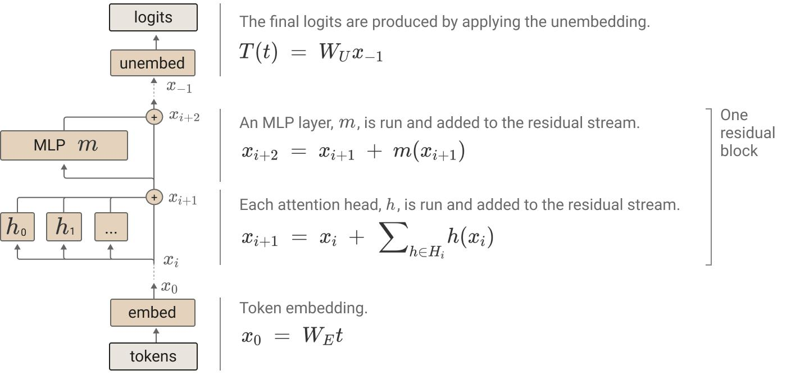
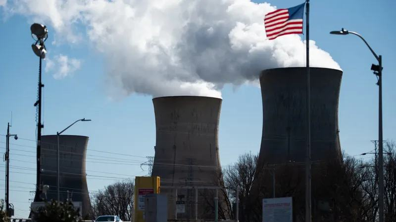

Pourquoi les IA consomment-elles de l'électricité et de l'eau ?
Parce que derrière chaque réponse, une machine calcule.
À chaque question, des calculs
Générer du texte, pour un ordinateur, c'est enchaîner des multiplications de tableaux de chiffres, des milliers de fois par réponse.

Schéma tiré de « A Mathematical Framework for Transformer Circuits », Anthropic, 2021.
Plus le modèle est gros, plus la machine est grosse
Ce qui compte, c'est la mémoire qu'il faut pour charger les paramètres.
Un smartphone
Jusqu'à 3 Go.
Un ordinateur portable
Jusqu'à 16 Go, pour un petit modèle.
Une tour avec une carte graphique
Jusqu'à 80 Go, pour un modèle moyen.
Un serveur à plusieurs cartes
Au-delà de 80 Go, pour un grand modèle.
Seuils affichés par compar:IA dans la fiche « Matériel nécessaire » de chaque modèle, à raison de 80 Go par carte graphique.
Où tournent ces machines
Vous posez une question à une IA comme ChatGPT. Elle part dans un centre de données rempli d'ordinateurs puissants. Le centre tire son électricité du réseau et consomme de l'eau pour refroidir les machines.
Un centre de données orienté IA consomme autant d'électricité que 100 000 ménages.
Les plus grands, en construction aujourd'hui, en consommeront 20 fois plus.
« Energy and AI », Agence internationale de l'énergie, 2025.
Rallumer une centrale nucléaire

En 2024, Microsoft a acheté cette ancienne centrale. L'entreprise espère en tirer :
850 MW
pour alimenter des systèmes d'intelligence artificielle comme ChatGPT.
« Three Mile Island nuclear plant will reopen to power Microsoft data centers », NPR, 2024.
Et des matières premières
D'après BHP, l'essor de l'IA fera passer la part des centres de données dans la demande annuelle de cuivre :
| Aujourd'hui | D'ici 2050 |
|---|---|
| 1 % | 6 à 7 % |
Or le cuivre est un métal essentiel à la transition énergétique.
« Why AI tools and data centres are driving copper demand », BHP, 2024.